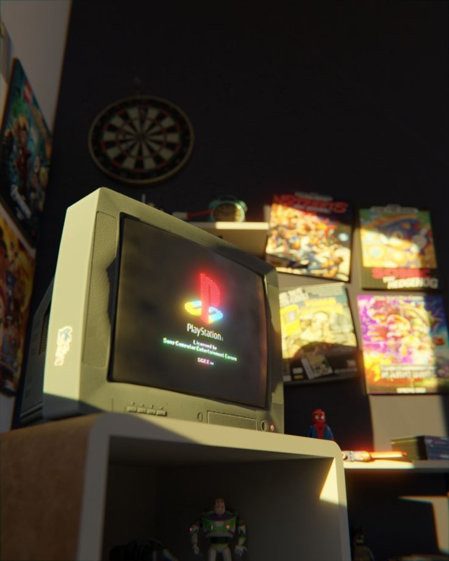

Clásicos para jugar un domingo a la tarde

Este post tiene los juegos con las vibras para relajarse y jugar algo que te saque una sonrisa sin estrés ni presión. No siempre queremos competir online o seguir historias larguísimas. A veces, lo ideal es volver a los clásicos, esos juegos que todos jugamos alguna vez y que siguen siendo igual de divertidos hoy en día.
leer mas
La magia de los emuladores

Si creciste jugando en consolas como PlayStation 2, Game Boy, Super Nintendo o Nintendo DS, seguramente más de una vez te agarró la nostalgia. La buena noticia es que hoy podés revivir esos momentos desde tu PC o tu celular gracias a los emuladores.
leer mas